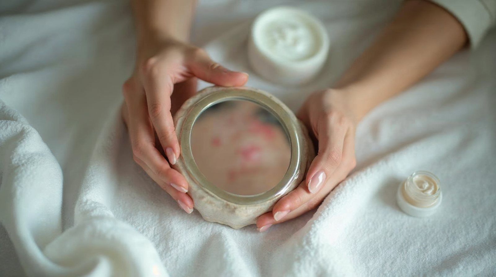
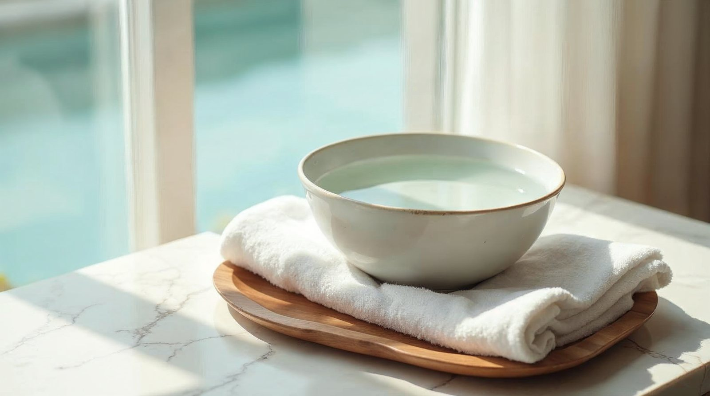
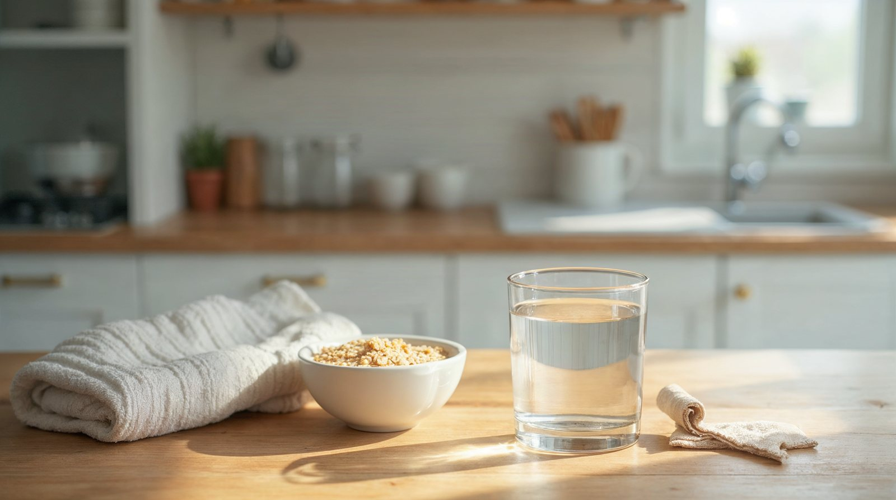
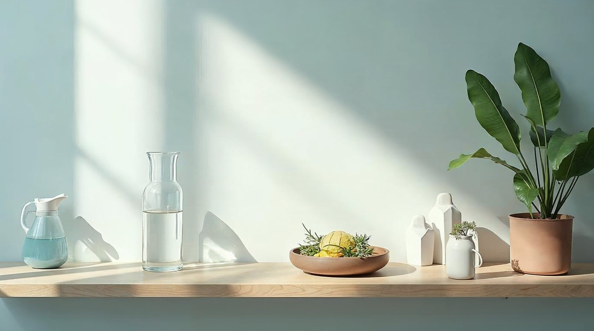

이종호 한의사 감수좋은꿈참사랑한의원 대표원장 (한의사 면허번호 19769)발행 2026-11-26 · 수정 2026-11-27
이 글의 차례
아침에 세수를 하고 거울을 보면 콧방울 옆이 또 붉게 일어나 있어요. 화장을 하면 그 자리만 각질이 들떠 하얗게 뜨고, 눈썹 사이에서는 비듬 같은 가루가 떨어지죠. 며칠 괜찮다가 잠을 설친 주나 바쁜 주가 되면 어김없이 다시 올라옵니다.
진료실에서 이런 말씀을 자주 들어요. "사람 만나는 날만 되면 꼭 더 빨개져요." 얼굴은 가릴 수 없는 자리라 신경이 안 쓰일 수가 없죠. 화장으로 덮으려다 오히려 각질이 도드라져 속상했던 경험도 다들 한 번씩은 있으실 거예요.
이렇게 얼굴의 기름이 많은 자리가 붉어지고 노르스름한 각질이 일어나는 상태를 지루성 피부염이라고 불러요. 코 옆, 눈썹과 미간, 이마, 귀 뒤, 턱 끝이 흔한 자리예요. 두피의 비듬과 함께 오는 경우도 많고요.
지루성 피부염은 좋아졌다 나빠졌다를 되풀이하며 오래 함께 가는 경우가 많아요. 그래서 저는 둘을 나눠서 말씀드려요. '깨끗하게 없애는 것'과 '덜 올라오고, 올라와도 빨리 가라앉게 하는 것'은 다른 목표예요. 저는 뒤쪽에 마음을 둡니다.
피부과 진료는 그대로 받으시면서, 한의원에서는 잠과 피로, 소화를 함께 살펴요. 왜인 줄 아세요? 붉어짐이 심해진 날을 거슬러 올라가 보면 잠이 짧았던 밤, 술자리, 몰아친 일정이 먼저 있었던 경우가 많거든요.
피부가 예민할 때는 이것저것 발라 보고 싶어지는데, 그럴수록 피부가 더 지치기도 해요. 그 답답함 잘 알아요. 조금 덜 하고, 조금 더 쉬게 해 주는 쪽으로 같이 방향을 잡아 봐요.
왜 기름진 자리에 생길까요
지루성 피부염은 피지가 많이 나오는 자리에 잘 생깁니다. 피부에 원래 살고 있는 효모균의 한 종류가 피지를 먹고 자라며 만들어 내는 물질이, 예민한 피부에 염증 반응을 일으키는 것으로 알려져 있습니다. 균이 있다고 모두 생기는 것은 아니고, 피부가 그 자극을 어떻게 받아들이느냐가 중요하게 여겨집니다.
그래서 같은 피부라도 잠이 부족하고, 피로가 쌓이고, 스트레스가 많을 때 더 잘 올라옵니다. 계절로는 건조하고 찬 바람이 부는 가을과 겨울에 심해진다는 분이 많고, 땀과 피지가 늘어나는 여름에 심해진다는 분도 있습니다.
비듬이 많은 두피와 얼굴의 지루성 피부염은 같은 뿌리에서 오는 경우가 많습니다. 두피를 함께 챙기지 않으면 얼굴만 따로 정리하기가 어렵기도 합니다.
한의학에서는 얼굴에 붉고 기름진 증상이 반복되는 모습을 몸의 열과 습이 위로 몰리는 흐름과 함께 살펴 왔습니다. 그래서 저는 얼굴만 보지 않고 소화와 대변, 잠과 땀, 음주와 식사 습관을 함께 여쭙니다.
지루성 피부염은 갓난아기의 머리에 노란 딱지처럼 생기기도 하고, 어른이 되어 얼굴과 두피에 다시 나타나기도 합니다. 어른의 지루성 피부염은 한 번 생기면 계절과 컨디션을 따라 오르내리는 경우가 많아, 길게 보고 함께 다독여 가는 마음이 필요합니다.
비슷해 보이는 다른 얼굴 피부 문제
얼굴이 붉고 각질이 일어난다고 모두 지루성 피부염은 아닙니다. 모양이 비슷해도 관리 방법이 달라서, 처음에는 피부과에서 구분을 받아 보시길 권합니다.
주사(안면홍조)
볼과 코가 쉽게 붉어지고 실핏줄이 보이며, 뜨거운 음식이나 술, 사우나 뒤에 확 달아오르는 경우입니다. 여드름 같은 붉은 뾰루지가 함께 나기도 합니다. 지루성 피부염과 함께 있는 경우도 있어 구분이 필요합니다.
아토피 피부염
어릴 때부터 피부가 건조하고 가려웠으며, 목과 팔꿈치 안쪽, 무릎 뒤처럼 접히는 곳에도 증상이 있다면 아토피 피부염일 수 있습니다. 가려움이 훨씬 심하고 피부가 전반적으로 건조한 것이 특징입니다.
접촉 피부염
새 화장품이나 세안제, 마스크를 쓰기 시작한 뒤 그것이 닿는 자리에만 붉고 가렵다면 접촉 피부염을 의심해 봅니다. 원인이 되는 제품을 멈추면 가라앉는 경우가 많습니다.
입 주위 피부염
입 주위, 콧방울 아래에 작은 붉은 뾰루지가 오돌토돌 생기고 입술 바로 옆은 비어 있는 모양이라면 입 주위 피부염일 수 있습니다. 얼굴에 스테로이드 연고를 오래 바른 뒤에 생기는 경우가 있어 피부과와 상의가 필요합니다.
얼굴에 바르는 연고, 이렇게 생각해 봅니다
피부과에서는 지루성 피부염에 항진균 크림이나 염증을 가라앉히는 연고를 처방하는 경우가 많습니다. 얼굴 피부는 얇아서, 특히 스테로이드 연고는 처방받은 기간과 방법대로 쓰는 것이 안전합니다.
예전에 받아 둔 연고를 증상이 올라올 때마다 꺼내 바르는 분들이 계십니다. 빨리 가라앉으니 손이 가는 마음은 이해합니다. 그러나 얼굴에 오래 쓰면 피부가 얇아지거나 실핏줄이 도드라지고, 끊었을 때 더 붉어지는 일이 생길 수 있다고 알려져 있습니다.
그래서 집에 있는 연고를 쓰고 계신다면 이름과 바르는 빈도를 그대로 알려 주세요. 줄이거나 바꾸는 일은 처방한 피부과와 상의해 정하시도록 안내합니다. 한의원 진료를 시작했다고 연고를 갑자기 끊지는 마세요.

예를 들면 이런 경우입니다
실제 어느 분의 사연이 아니라, 진료실에서 자주 보는 모습을 바탕으로 그려 본 장면입니다.
예를 들어 야근이 이어지는 주마다 콧방울 옆이 붉게 일어나는 직장인이라면, 먼저 잠드는 시각과 저녁 식사, 술자리 횟수를 함께 적어 봅니다. 대개 몇 주만 적어도 붉어지는 날 앞에 무엇이 있었는지가 보이기 시작합니다.
각질이 신경 쓰여 하루에도 몇 번씩 세안하고 스크럽을 하는 분이라면, 세안 횟수를 줄이고 미지근한 물로 순하게 씻는 것부터 권합니다. 각질을 벗겨 내려 할수록 피부는 더 예민해지기 쉽습니다.
두피 비듬과 얼굴 증상이 함께 있는 분이라면, 두피 관리를 같이 이야기합니다. 머리를 감고 남은 거품이 이마와 귀 뒤에 남지 않도록 헹구는 것만으로도 얼굴의 짐을 덜 수 있습니다.

붉어지는 날의 앞을 들여다봅니다
얼굴 지루성 피부염은 '그날' 갑자기 올라온 것 같아도, 대개 며칠 앞의 일이 쌓여 드러나는 경우가 많습니다. 잠이 짧았던 사흘, 술자리가 이어진 주, 마감에 쫓긴 열흘 같은 것들입니다.
그래서 저는 붉어진 날보다 그 전 사나흘을 함께 여쭙니다. 처음에는 잘 떠오르지 않다가, 기록을 몇 주 하고 나면 "아, 이번에도 잠을 줄인 다음이네요" 하고 스스로 찾아내시는 분들이 많습니다. 그 순간부터는 피부가 올라오기 전에 미리 쉬어 갈 수 있게 됩니다.
계절이 바뀌는 때도 눈여겨봅니다. 가을에서 겨울로 넘어가며 공기가 건조해지면 각질이 늘고, 실내 난방으로 얼굴이 달아오르는 날이 많아집니다. 이 시기에는 보습을 한 단계 늘리고, 실내 온도를 너무 높이지 않도록 신경 써 주세요.
뜨거운 물 샤워나 사우나, 매운 음식 뒤에 얼굴이 확 달아오르며 증상이 심해진다는 분도 있습니다. 이런 자극은 피하라고 말씀드리기보다, 어떤 것이 내 피부를 건드리는지 기록으로 먼저 알아보자고 권합니다. 사람마다 걸리는 것이 다르기 때문입니다.
먼저 이렇게 여쭙니다
얼굴 피부로 오시면 대략 이런 순서로 여쭙니다.
- 어느 자리가 언제부터 붉어지고 각질이 일어났나요?
- 가려움, 따가움, 화끈거림 가운데 무엇이 더한가요?
- 두피 비듬이나 귀 뒤, 가슴 가운데에도 비슷한 증상이 있나요?
- 지금 쓰는 세안제, 스킨케어, 화장품은 무엇이고 최근 바꾼 것이 있나요?
- 피부과에서 받은 진단과 연고 이름, 바르는 빈도는 어떤가요?
- 잠, 피로, 음주, 기름진 음식, 스트레스는 요즘 어떠신가요?
빠짐없이 기억하지 못하셔도 괜찮습니다. 쓰고 계신 제품을 사진으로 찍어 오시면 이야기가 훨씬 쉬워집니다.

일상에서 먼저 해 볼 수 있는 것
얼굴 피부는 매일 손이 닿는 곳이라 작은 습관이 그대로 쌓입니다. 아래에서 하나나 두 가지만 골라 2주 정도 이어 가 보세요.
- 세안은 아침저녁 두 번, 미지근한 물과 순한 세안제로 문지르지 말고 거품으로 씻기
- 스크럽, 필링, 알갱이 있는 세안제는 붉어진 동안 쉬기
- 바르는 제품 가짓수를 줄이고, 향이 적은 보습제 하나로 정리하기
- 두피 비듬이 있다면 머리를 감을 때 거품이 이마와 귀 뒤에 남지 않게 충분히 헹구기
- 잠드는 시각을 일정하게 맞추고, 늦은 밤 술과 기름진 야식 줄이기
- 각질이 일어나도 손으로 뜯거나 긁지 않기
햇볕을 적당히 쬐는 것이 도움이 된다는 분도 있지만, 오래 쬐면 피부가 달아오르고 건조해질 수 있습니다. 자외선 차단제는 순한 것으로 골라 쓰시고, 처음 쓰는 제품은 귀 뒤나 턱 아래에 조금 발라 하루 지켜본 뒤 얼굴에 써 보세요.
남자분이라면 면도 습관도 살펴봅니다. 무딘 면도날로 여러 번 밀면 피부가 쉽게 자극을 받습니다. 면도 전 따뜻한 물로 수염을 불리고, 면도 뒤에는 순한 보습제로 마무리하시길 권합니다.
마스크를 오래 쓰는 날에는 콧방울과 턱 주위에 땀과 피지가 차기 쉽습니다. 중간에 깨끗한 마스크로 바꾸고, 집에 오면 순하게 씻어 주세요.
보습제를 고를 때는 성분표가 짧고 향이 적은 것을 먼저 권합니다. 기름이 많은 자리라 보습을 꺼리는 분도 계신데, 세안 뒤 당기는 느낌이 남으면 피부는 오히려 더 예민해지기 쉽습니다. 묽은 로션을 얇게 펴 바르는 정도로 시작해 보세요.
손으로 얼굴을 자주 만지는 습관도 살펴봅니다. 턱을 괴거나 코 옆 각질을 무심코 뜯는 손은 대개 피곤하거나 집중할 때 나옵니다. 책상 위에 작은 거울을 두기보다 치워 두는 편이 손을 덜 가게 한다는 분들도 있습니다.
베갯잇과 수건도 피부에 매일 닿는 물건입니다. 베갯잇은 자주 갈고, 얼굴 수건은 몸 수건과 따로 두어 한 번 쓰고 빨아 주세요. 작은 일이지만 매일 쌓이면 피부가 받는 자극의 양이 달라집니다.

한의원에서 함께 살필 수 있는 경우
- 피부과 치료를 받으면서 잠·피로·음주 습관 때문에 자꾸 다시 올라오는 경우
- 얼굴이 자주 달아오르고 소화가 더부룩하며 대변이 고르지 않은 경우
- 스트레스와 피로가 쌓일 때마다 얼굴과 두피가 함께 붉어지는 경우
- 바르는 약에 기대는 날이 늘어 생활 쪽에서 방법을 찾고 싶은 경우
좋은꿈참사랑한의원에 처음 오시면 모든 분의 맥을 먼저 짚고, 아래 '먼저 확인이 필요한' 신호가 없는지 봅니다. 맥을 짚으며 잠과 소화, 땀, 대소변, 몸의 열감을 여쭙습니다.
진찰을 마치면 상태에 맞춰 침 치료나 한약 상담이 필요한지 함께 정합니다. 한약을 상의할 때는 피부과 약과 드시는 약을 확인하며 신중하게 정합니다. 피부 질환의 진단과 연고·약 처방은 피부과의 몫이라, 피부과 진료는 이어 가시도록 안내합니다.
다시 오시면 지난번 정한 생활 목표가 어땠는지, 붉어짐이 심했던 날 그 앞에 무엇이 있었는지부터 이어서 듣습니다. 얼굴 피부는 한 달 정도의 흐름으로 보아야 변화가 보이니, 조급해하지 않고 함께 지켜보겠습니다.
피부는 우리가 지낸 한 달을 비춰 보이는 거울 같다고 저는 자주 말씀드립니다. 그래서 진료실에서는 얼굴만 보지 않고 지난 한 달의 잠과 식사, 일의 무게를 함께 펼쳐 봅니다. 그 안에서 바꿔 볼 만한 것 하나를 고르는 것이 첫걸음입니다.
이렇게 기록해 오시면 상담이 쉬워집니다
2주 정도만 한 줄씩 적어 보세요. 사진을 곁들이면 더 좋아요. 붉어짐은 날마다 오락가락해서, 기억에만 기대면 '늘 심했던 것'처럼 느껴지기 쉽거든요.
- 붉어짐과 각질이 심했던 날, 같은 조명에서 찍은 얼굴 사진
- 잠든 시각과 깬 시각, 술을 마신 날
- 새로 쓴 화장품이나 세안제, 바꾼 제품
- 연고를 바른 날과 횟수
- 일이 몰리거나 마음 쓰이는 일이 많았던 날
- 두피 비듬이 심했던 날
몸 안쪽의 리듬을 살피는 건 제가 할게요. 대신 하나만 부탁드려요. 세수할 때 얼굴을 문지르지 말고, 미지근한 물로 가볍게 헹군 뒤 수건으로 눌러서만 닦아 주세요. 딴 건 지금처럼 편하게 하셔도 돼요.
거울을 볼 때마다 마음이 쓰이셨을 그 자리를 생각하면, 그동안 얼마나 속상하셨을까 싶어요. 피부는 세게 다룰수록 더 예민해지기 쉬워요. 약하게, 오래, 매일이 피부한테도 맞는 말이거든요.
다음에 오시면 붉어짐이 심했던 날 그 전날 밤에 무엇이 있었는지부터 여쭐게요. 궁금한 건 그냥 편하게 물어보세요.
이런 증상은 먼저 확인이 필요합니다
- 눈 주위가 붓고 열이 나거나 진물·고름·무리 지은 물집이 생기는 경우
- 열이 나면서 붉은 부위가 빠르게 넓어지거나 얼굴·목이 붓는 경우
이런 신호가 있으면 한의원보다 가까운 병원이나 응급실을 먼저 찾으세요.
함께 읽으면 좋은 글
- 두피에 비듬이 많고 가렵고 붉을 때는 어떻게 살피나요?
- 겨울 찬바람을 맞고 들어오면 볼이 빨갛게 달아오르고 따가울 때는 어떻게 살피나요?
- 어른이 되어서도 턱선에 뾰루지가 반복될 때는 무엇을 먼저 살피나요?
- 잠이 부족하면 피부가 푸석하고 트러블이 나는 이유는 무엇인가요?

여쭙는 것
- 어느 자리가 언제부터 붉어지고 각질이 일어났나요?
- 가려움, 따가움, 화끈거림 가운데 무엇이 더한가요?
- 두피 비듬이나 귀 뒤, 가슴 가운데에도 비슷한 증상이 있나요?
생활에서 해 볼 것
- 세안은 아침저녁 두 번, 미지근한 물과 순한 세안제로 문지르지 말고 거품으로 씻기
- 스크럽, 필링, 알갱이 있는 세안제는 붉어진 동안 쉬기
- 바르는 제품 가짓수를 줄이고, 향이 적은 보습제 하나로 정리하기
한의원에서 함께 살필 것
- 피부과 치료를 받으면서 잠·피로·음주 습관 때문에 자꾸 다시 올라오는 경우
- 얼굴이 자주 달아오르고 소화가 더부룩하며 대변이 고르지 않은 경우
- 스트레스와 피로가 쌓일 때마다 얼굴과 두피가 함께 붉어지는 경우
먼저 확인이 필요한 신호
- 눈 주위가 붓고 열이 나거나 진물·고름·무리 지은 물집이 생기는 경우
- 열이 나면서 붉은 부위가 빠르게 넓어지거나 얼굴·목이 붓는 경우
한눈에 보는 표
| 구분 | 핵심 |
|---|---|
| 여쭙는 것 | 어느 자리가 언제부터 붉어지고 각질이 일어났나요? 가려움, 따가움, 화끈거림 가운데 무엇이 더한가요? |
| 생활에서 해 볼 것 | 세안은 아침저녁 두 번, 미지근한 물과 순한 세안제로 문지르지 말고 거품으로 씻기 스크럽, 필링, 알갱이 있는 세안제는 붉어진 동안 쉬기 |
| 한의원에서 함께 살필 것 | 피부과 치료를 받으면서 잠·피로·음주 습관 때문에 자꾸 다시 올라오는 경우 얼굴이 자주 달아오르고 소화가 더부룩하며 대변이 고르지 않은 경우 |
| 먼저 확인이 필요한 신호 | 눈 주위가 붓고 열이 나거나 진물·고름·무리 지은 물집이 생기는 경우 열이 나면서 붉은 부위가 빠르게 넓어지거나 얼굴·목이 붓는 경우 |
자주 묻는 질문
지루성 피부염은 얼굴을 자주 씻으면 줄어드나요?
너무 자주, 세게 씻으면 오히려 피부가 예민해질 수 있습니다. 아침저녁 두 번 미지근한 물과 순한 세안제로 거품을 내어 부드럽게 씻는 정도를 권합니다.
피부과 연고를 쓰고 있는데 한의원 진료를 같이 받아도 되나요?
네. 연고 이름과 바르는 빈도를 알려 주시면 확인한 뒤 상담합니다. 연고를 줄이거나 끊는 일은 처방한 피부과와 상의해 정하시도록 안내합니다.
지루성 피부염은 옮나요?
지루성 피부염은 다른 사람에게 옮는 병이 아닌 것으로 알려져 있습니다. 가족과 수건이나 베개를 같이 쓴다고 번지는 것도 아니니 걱정을 내려놓으셔도 됩니다.
화장을 해도 되나요?
붉어진 동안에는 가볍게 하시고 각질 위에 두껍게 덮지 않는 편이 좋습니다. 집에 오면 순하게 지우고, 새 제품은 귀 뒤나 턱 아래에 먼저 시험해 보세요.
주말에도 진료하나요?
평일은 09:30~20:00(점심 13:00~14:00), 토·일·공휴일은 09:30~15:00(점심시간 없음)에 진료합니다. 방문 전 전화(02-815-7510)로 확인해 주세요.
좋은꿈참사랑한의원은 재진 때 지난번 이야기부터 이어서 여쭙니다. 진료시간과 예약은 오시는 길에서 확인하세요.
어디서 상담받을 수 있나요?
좋은꿈참사랑한의원은 서울 동작구 만양로2길 2 신성빌딩 3층·5층(서울 동작구 상도동, 7호선 상도역 3번 출구 근처)에 있습니다. 한의사 3명(이종호 대표원장, 조영기 수석진료원장, 정원영 진료원장)이 진료합니다. 진료시간은 평일 09:30~20:00(점심 13:00~14:00), 토·일·공휴일 09:30~15:00이며, 방문 전 전화로 확인을 권합니다. 예약은 네이버 예약, 카카오톡 상담, 전화 02-815-7510로 받습니다.
이 글은 일반적인 건강 정보이며 개인의 진단이나 치료를 대신하지 않습니다. 증상이 있거나 복용 중인 약이 있다면 진료를 통해 확인하세요. 치료 효과는 개인마다 다를 수 있습니다.
작성 기준: 일반적으로 알려져 있는 건강 정보를 참고해 정리했습니다(대표원장 감수). 증상 기록은 1~2주 동안 하루 1회, 비슷한 시간에 적어 오시면 지난 상태와 비교하기 쉽습니다.